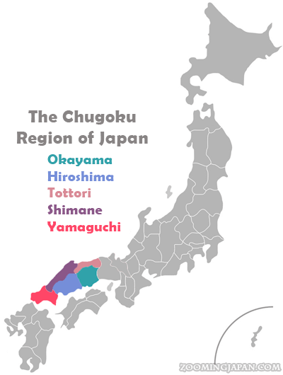

中国地方 · Chūgoku Region
Hiroshima
Home Away From Home
Hiroshima is a prefecture in the western part of Japan, within the Chūgoku region. It is a place of remembrance and renewal — famous for its Peace Memorial Park, the Atomic Bomb Dome, and the floating torii gate of Itsukushima Shrine on Miyajima Island.
The Chūgoku Region
The Chūgoku region sits at the western end of Honshū, Japan's main island, and is made up of five prefectures. Hiroshima is its largest city and cultural heart.
- Hiroshima Prefecture
- Okayama Prefecture
- Yamaguchi Prefecture
- Shimane Prefecture
- Tottori Prefecture

What Hiroshima Is Famous For
Three places tell Hiroshima's story best. Start here, then explore each one in depth.
Peace Memorial Park
A place of remembrance — the museum, the cenotaph, and the eternal Flame of Peace.
Visit the Park 原爆ドームAtomic Bomb Dome
The one building left standing on 6 August 1945 — kept as a reminder, and a call for peace.
Read the History 宮島Miyajima Island
The floating torii gate of Itsukushima Shrine, Mt. Misen, the five-story pagoda, and the deer.
Explore the Island